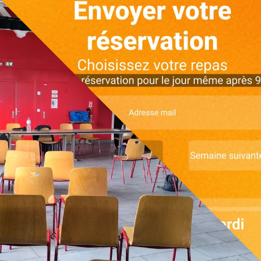

Expériences
Partez en exploration dans mes expériences passées. En effet, j'ai été attiré très jeune par le domaine de la programmation. Cette catégorie est triée du plus récent au plus ancien.
DÉVELOPPEUR FULL STACK 2025 (2mois)
J'ai eu pour mission de développer une webapp de restauration pour l'association GAIA 74. J'ai été sur le terrain pour rencontrer les utilisateurs et acteurs du furtur logiciel. Sur cette base, j'ai conçu l'application de réservation et de gestion des repas pour la cuisine du CHRS La Cordée. J'ai aussi participé à la vie de l'association (AG, journée associative).
Compétences travaillées : - Adaptabilité - Conversion des demandes en solutions - Front end (HTML/CSS/JS) - Back end (Express.js/Batch scripting/BDD en .json)
Liens : - Lien de la webapp(inactive) - GitHub du projet - Site de l'association
STAGE CODE ET JEU VIDÉO 2D 2023 (2semaines)
J'ai eu pour mission de développer une webapp de restauration pour l'association GAIA 74. J'ai été sur le terrain pour rencontrer les utilisateurs et acteurs du furtur logiciel. Sur cette base, j'ai conçu l'application de réservation et de gestion des repas pour la cuisine du CHRS La Cordée. J'ai aussi participé à la vie de l'association (AG, journée associative).
Compétences travaillées : - Adaptabilité - Conversion des demandes en solutions - Front end (HTML/CSS/JS) - Back end (Express.js/Batch scripting/BDD en .json)
Liens : - Lien de la webapp(inactive) - GitHub du projet - Site de l'association